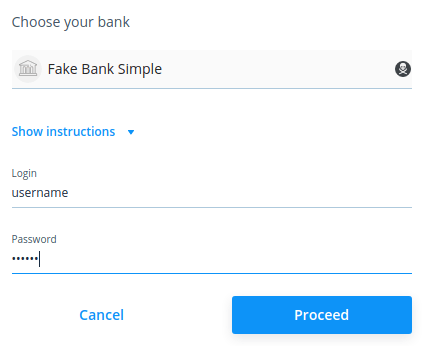

Salt Edge¶
Salt Edge es un proveedor externo que agrega información bancaria de sus cuentas. Es compatible con ~5000 instituciones en más de 50 países.
Odoo se puede sincronizar directamente con su banco para obtener todos los extractos bancarios importados automáticamente a su base de datos.
Ver también
Configuración¶
Vincule sus cuentas bancarias con Odoo¶
Inicie la sincronización haciendo clic en :menuselection:
Contabilidad --> Configuración --> Agregar una cuenta bancaria.Seleccione la institución que desea sincronizar. Para ver si Salt Edge es el proveedor externo de la institución solo tiene que seleccionarla.
Después de dar su número de teléfono, se le solicita una dirección de correo electrónico. Esta dirección de correo electrónico se utiliza para crear su cuenta de Salt Edge. Asegúrese de ingresar una dirección de correo electrónico válida, de lo contrario, no podrá acceder a su cuenta de Salt Edge.

Después de ingresar su dirección de correo electrónico, se le redirigirá a Salt Edge para continuar con el proceso de sincronización.
Asegúrese de marcar la casilla para dar su consentimiento.

Complete la sincronización siguiendo los pasos.
Actualice sus credenciales¶
Es posible que deba actualizar sus credenciales de Salt Edge o modificar la configuración de sincronización.
Para hacerlo, vaya a: menuselection:Contabilidad -> Configuración -> Sincronización en línea y seleccione la institución donde desea actualizar las credenciales. Haga clic en el botón * Actualizar credenciales * para iniciar el flujo y siga los pasos.
No olvide marcar la casilla de verificación de consentimiento. De lo contrario, es posible que Odoo no pueda acceder a su información.
Obtener cuentas nuevas¶
Es posible que desee agregar nuevas cuentas en línea a su conexión.
Para hacerlo, vaya a: menuselection: Contabilidad -> Configuración -> Sincronización en línea y seleccione la institución para buscar las cuentas nuevas. Haga clic en el botón * Obtener cuentas * para iniciar el flujo y siga los pasos.
No olvide marcar la casilla de verificación de consentimiento. De lo contrario, es posible que Odoo no pueda acceder a su información.
Preguntas frecuentes¶
Aparece un error cuando intento de borrar la sincronización dentro de Odoo¶
Odoo no puede eliminar de forma permanente la conexión que creó con la institución bancaria. Sin embargo, puede revocar el consentimiento que proporcionó para que Odoo ya no tenga acceso a su cuenta. Es probable que el error que está viendo sea un mensaje que menciona que se revocó el consentimiento, pero que el registro no se pudo eliminar porque todavía existe dentro de Salt Edge. Si desea eliminar la conexión por completo, entre a su cuenta de Salt Edge y elimine su sincronización de forma manual. Una vez hecho esto, puede volver a Odoo para eliminar el registro.
Aparece un error en el que dice que ya sincronicé esta cuenta¶
Es probable que ya haya sincronizado su cuenta bancaria con Salt Edge, verifique en su tablero que no tiene una conexión con las mismas credenciales.
En caso de que ya tenga una sincronización que tenga las mismas credenciales en su panel de Salt Edge y que no se haya creado con Odoo, elimínela y créela desde su base de datos de Odoo.
En caso de que ya tenga una conexión con las mismas credenciales presentes en su tablero de Salt Edge y esta sincronización se haya creado con Odoo, normalmente podrá encontrarla yendo a :menuselection: Contabilidad --> Configuración --> Sincronización en línea. Asegúrese de realizar una Actualización de credenciales para reactivar la conexión.